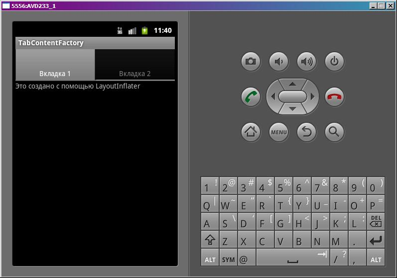
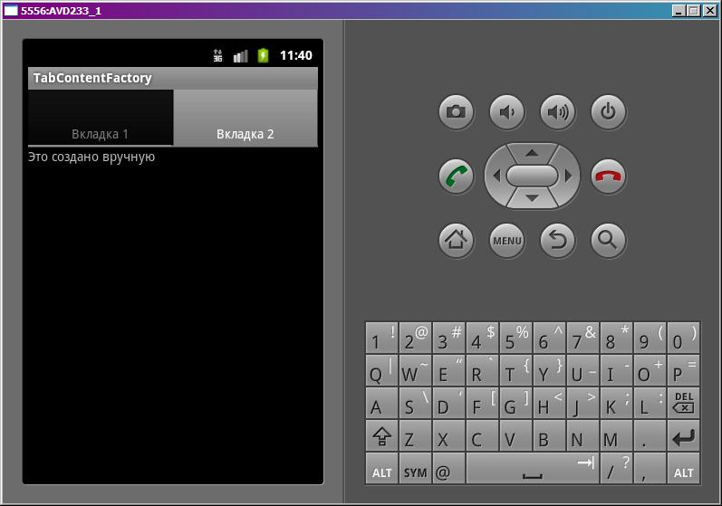

В этом уроке:
- вручную создаем содержимое вкладки
При работе с вкладками система предоставляет нам возможность самим создать View, которое будет использовано в качестве содержимого вкладки. Нам надо просто создать объект, реализующий интерфейс TabContentFactory, и напишем метод createTabContent. Этот метод на вход берет тэг, а выдать должен View.
View мы умеем создавать двумя способами: 1) непосредственно ручное создание объекта; 2) с помощью LayoutInflater.
Создадим проект:
Project name: P0781_TabContentFactory
Build Target: Android 4.0
Application name: TabContentFactory
Package name: ru.startandroid.develop.p0781tabcontentfactory
Create Activity: MainActivity
Пропишем текст в strings.xml:
<?xml version="1.0" encoding="utf-8"?>
<resources>
<string name="app_name">TabContentFactory</string>
<string name="text_tab">Это создано с помощью LayoutInflater </string>
</resources>Экран main.xml:
<?xml version="1.0" encoding="utf-8"?>
<LinearLayout
xmlns:android="http://schemas.android.com/apk/res/android"
android:layout_width="fill_parent"
android:layout_height="fill_parent"
android:orientation="vertical">
<TabHost
android:id="@android:id/tabhost"
android:layout_width="match_parent"
android:layout_height="match_parent">
<LinearLayout
android:layout_width="match_parent"
android:layout_height="match_parent"
android:orientation="vertical">
<TabWidget
android:id="@android:id/tabs"
android:layout_width="match_parent"
android:layout_height="wrap_content">
</TabWidget>
<FrameLayout
android:id="@android:id/tabcontent"
android:layout_width="match_parent"
android:layout_height="match_parent">
</FrameLayout>
</LinearLayout>
</TabHost>
</LinearLayout>FrameLayout не заполняем, т.к. сами будем View создавать.
Создадим layout-файл tab.xml:
<?xml version="1.0" encoding="utf-8"?>
<LinearLayout
xmlns:android="http://schemas.android.com/apk/res/android"
android:layout_width="match_parent"
android:layout_height="match_parent"
android:orientation="vertical">
<TextView
android:layout_width="wrap_content"
android:layout_height="wrap_content"
android:text="@string/text_tab">
</TextView>
</LinearLayout>Из него мы с помощью LayoutInflater будем получать View и устанавливать в качестве содержимого вкладки.
Кодим MainActivity.java:
package ru.startandroid.develop.p0781tabcontentfactory;
import android.app.TabActivity;
import android.os.Bundle;
import android.view.View;
import android.widget.TabHost;
import android.widget.TextView;
public class MainActivity extends TabActivity {
final String TABS_TAG_1 = "Tag 1";
final String TABS_TAG_2 = "Tag 2";
/** Called when the activity is first created. */
public void onCreate(Bundle savedInstanceState) {
super.onCreate(savedInstanceState);
setContentView(R.layout.main);
TabHost tabHost = getTabHost();
TabHost.TabSpec tabSpec;
tabSpec = tabHost.newTabSpec(TABS_TAG_1);
tabSpec.setContent(TabFactory);
tabSpec.setIndicator("Вкладка 1");
tabHost.addTab(tabSpec);
tabSpec = tabHost.newTabSpec(TABS_TAG_2);
tabSpec.setContent(TabFactory);
tabSpec.setIndicator("Вкладка 2");
tabHost.addTab(tabSpec);
}
TabHost.TabContentFactory TabFactory = new TabHost.TabContentFactory() {
@Override
public View createTabContent(String tag) {
if (tag == TABS_TAG_1) {
return getLayoutInflater().inflate(R.layout.tab, null);
} else if (tag == TABS_TAG_2) {
TextView tv = new TextView(MainActivity.this);
tv.setText("Это создано вручную");
return tv;
}
return null;
}
};
}Создание вкладок идет как обычно, только методу setContent на вход передаем объект, реализующий TabHost.TabContentFactory. Когда системе необходимо будет построить содержимое вкладки, она воспользуется этим объектом - вызовет его метод createTabContent. На вход ему пойдет тэг вкладки, на выходе должно получиться View. И наша задача – реализовать это.
TabFactory – объект, реализующий интерфейс TabHost.TabContentFactory. В его методе createTabContent мы проверяем тэг. Если это тэг первой вкладки, то прогоняем tab.xml через LayoutInflater и возвращаем получившееся View. Если тэг второй вкладки, то вручную создаем TextView и возвращаем его.
Все сохраним и запустим приложение. Первая вкладка:

Вторая вкладка:

В итоге мы создали содержимое первой вкладки из layout-файла, а содержимое второй – сами, через создание объектов.